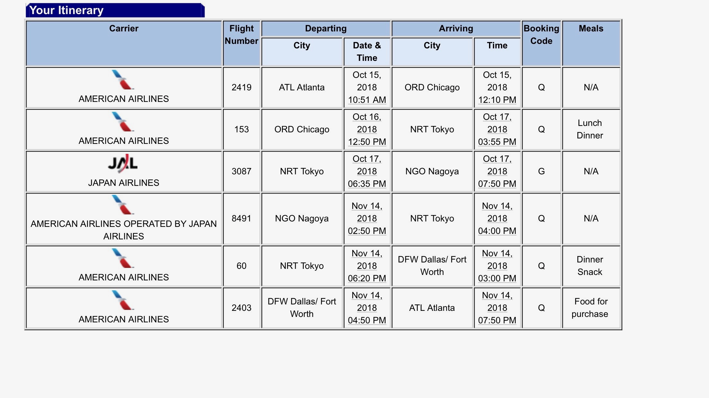
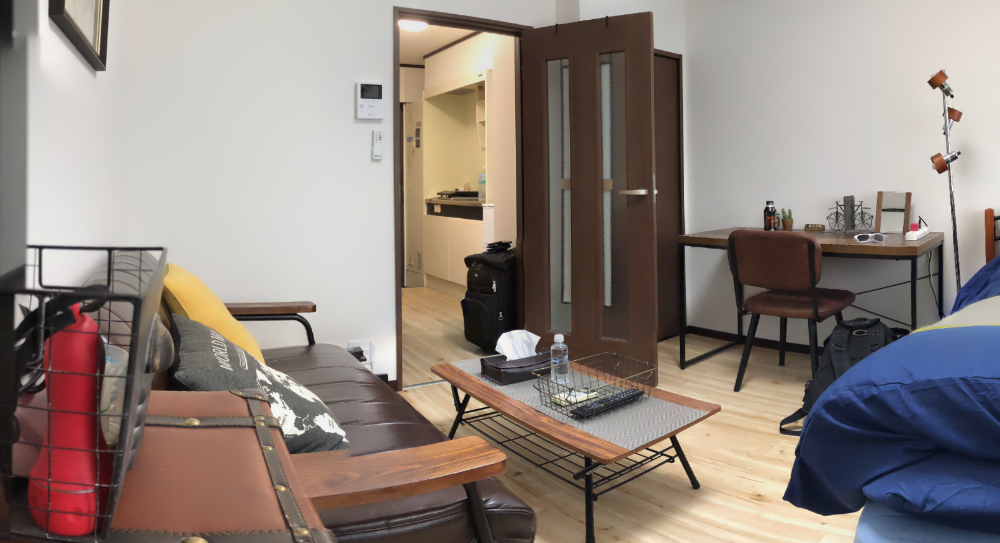
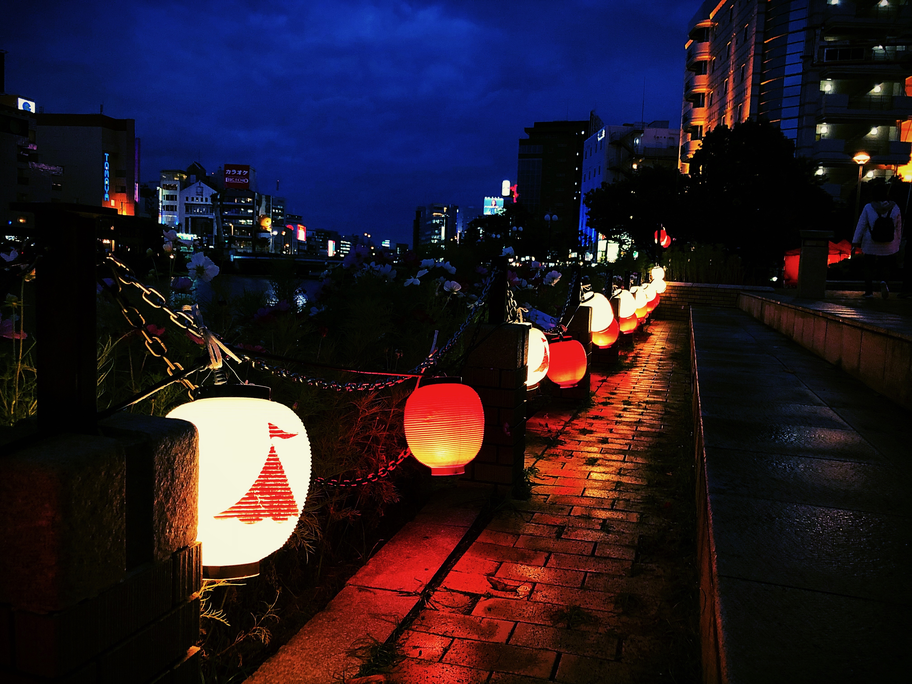
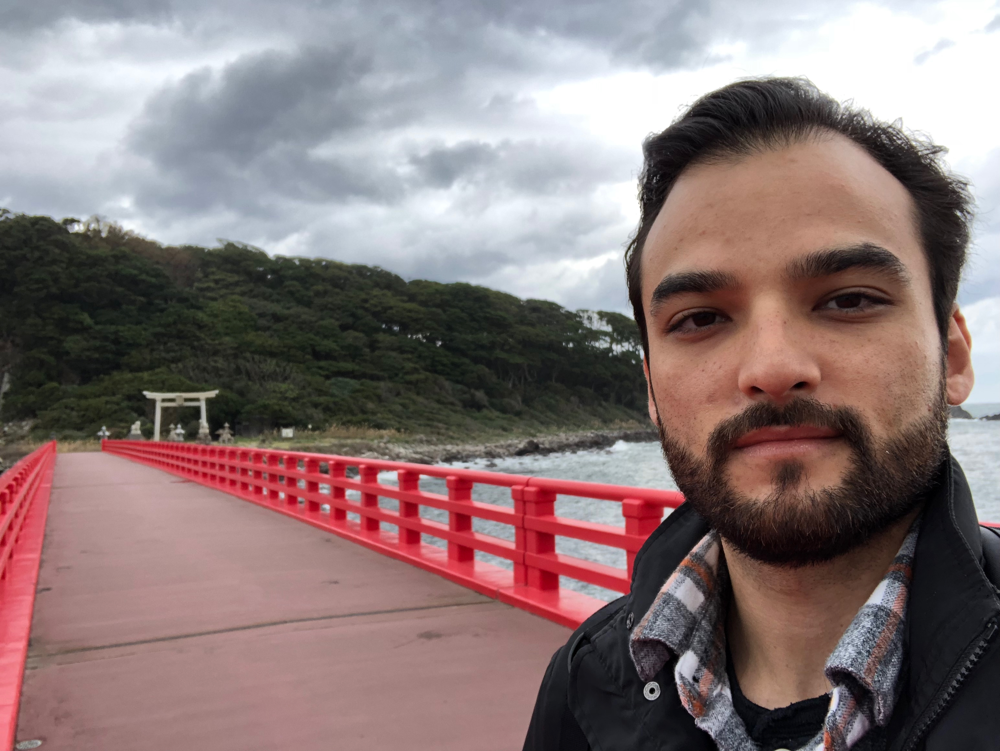

Ever thought about exploring a foreign land that is nothing like your own
and taking a solo trip there? One of the biggests goals I've ever achieved
was taking a 4 week solo trip to Japan. Japan has always been a fascinating
country to me. Ever since being exposed to Japanese cuisine, entertainment,
and culture, I wanted to learn more about Japan. With the technology that
we have today, watching YouTube videos or reading a book about Japan in
your home country can only go so far. I wanted a deeper experience. Of
course I did visit Japan when I was a child. In fact, I can still remember
that unique city scent that Yokohama, Japan had and a few vivid images in
my childhood memory. Everything else was fuzzy and I don't remember too
clearly.
Making That First Step
For a very long time, I knew I wanted to visit Japan in either Spring
or Autumn but nothing was going to happen if I kept dreaming about those
experiences. I had to make moves. In the Spring of year 2018, I finally
made my flight reservation to visit Japan from mid-October to
mid-November. Only 6 months to make preperations until lift off!

Itinerary.Flight to Japan.
Nagoya, Japan
My departure flight from Atlanta to Chicago was delayed due to bad weather
and congested air traffic. This caused me to lose a day, resulting only
one day stay in Nagoya.

A typical small apartment for your basic needs.
Many drinks to choose from in a Japanese Vending Machine!
At a Japanese 7-11 Convenient Store, here are some goodies you will
typically find.
Kyoto, Japan
Kyoto, Japan is a large metropolitan area filled with rich culture and history.
The city is relatively flat and has many preserverd temples. I recommend renting
a bike if you're going to be sight seeing all day.
This is one of many shrines and temples you will see when exploring
Kyoto, Japan.
Kamo River in Kyoto, Japan.
You can see the view of Kyoto at Arashiyama Monkey Park.Wild Macaque Monkeys at Arashiyama Monkey Park.
Fukuoka, Japan
This is the second largest port city in all of Japan. I was able to identify
the different dialects compared to the other cities I visited. This city does
have a big shopping district called Canal City with a different variety of
consumer goods: appearal, food, entertainment, and etc. Some times a free live
performance will be displayed to the public at night. This city is also known
to have great street food near the Canal Shopping district. If you need a quick
bite to eat and a nice drink before heading into Canal City, check out the stret
food vendors.

An evening view of the Naka River in Fukuoka, Japan.
Riding the Tokaido Shinkansen to Fukui, Japan
Unlike drive a car or riding the subway train to get to your
destination, the Shinkansen (also know as the bullet train) can
travel fast. I mean really fast. Almost 285 km/h. Japan is known
for their quality of life of convenience and this is the way to go
when traveling long distances on train. Riding the Shinkansen can
allow to to view unique sceneries.
Capturing a view when riding the Tokaido Shinkansen.
Fukui, Japan
I arrived in Fukui, Japan shortly after riding the Tokaido Shinkansen.
I only spent about two days in the area and there wasn't much to see
when it comes to touristy attractions. However, I did find a place to
explore called Oshima. Oshima is a small coastal town and there you can
cross Oshima Bridge to reach the an island.
You can see Oshima in the background.

Oshima bridge. You can find Oshima north of Fukui, Japan.
Summarizing the rest of my trip.
Unfortunitely, the footage I took for the rest of this trip was
lost. So I will briefly summarize the remainder of my journey.
After spending a short time in Fukui, Japan my next destination
was Takayama in the mountains of Gifu Prefecture of Japan.
Takayama, Gifu Prefecture, Japan
Takayama is a small town with preserved homes dating back in the Edo
Period. I was lucky to reserve a few nights in one of the traditional homes.
The timber construction was interesting to see but it got very cold
at night. Best to be prepared for colder weather. The air quality was
so clean, crisp, and unbelievebly refreshing. If you need a break from
the city life, I recommend taking a trip here.
Enoshima, Japan
Enoshima is located south of Yokohama, Japan. Enoshima is a island
off the Shōnan coast. If you like seafood, this is the place to be.
From squid, octopus, and other fish you've never heard of, you can
also get ice cream that have some unusually flavors. One option you
can get for ice cream is squid ink flavor. Pretty exotic eh? You
can also spend the whole day exploring the island itself; including
Enoshima Iwaya Cave.
Yokohama, Japan and Tokyo, Japan
For the remainder of my trip, I visited my aunt and uncle who live
in Yokohama. My cousins also arrived from South Korea too. When I
explored the city with them, I had flash backs of my childhood
memories with them. Just like the flash back scenes you see in
movies or tv series. We explored the local neighborhood, Yokohama
Chinatown, and Akihabara, Tokyo.